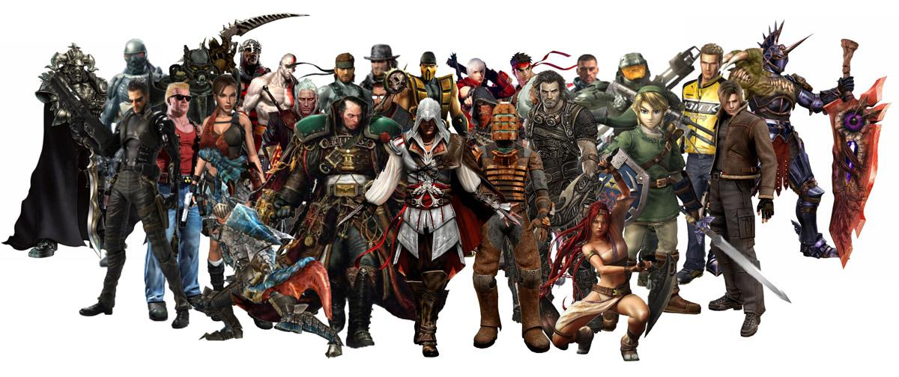

Ты узнаешь их даже по затылку
В большинстве игр от 3 лица мы играем за персонажа, которого мы видим со спины, но все равно мы узнаем так полюбившихся нам персонажей с первого взгляда на них. Этот сайт предлагает вам посмотреть на разных популярных героев, у которых мы обычно наблюдаем только затылок, попытаться угадать кто они и узнать о них побольше.
